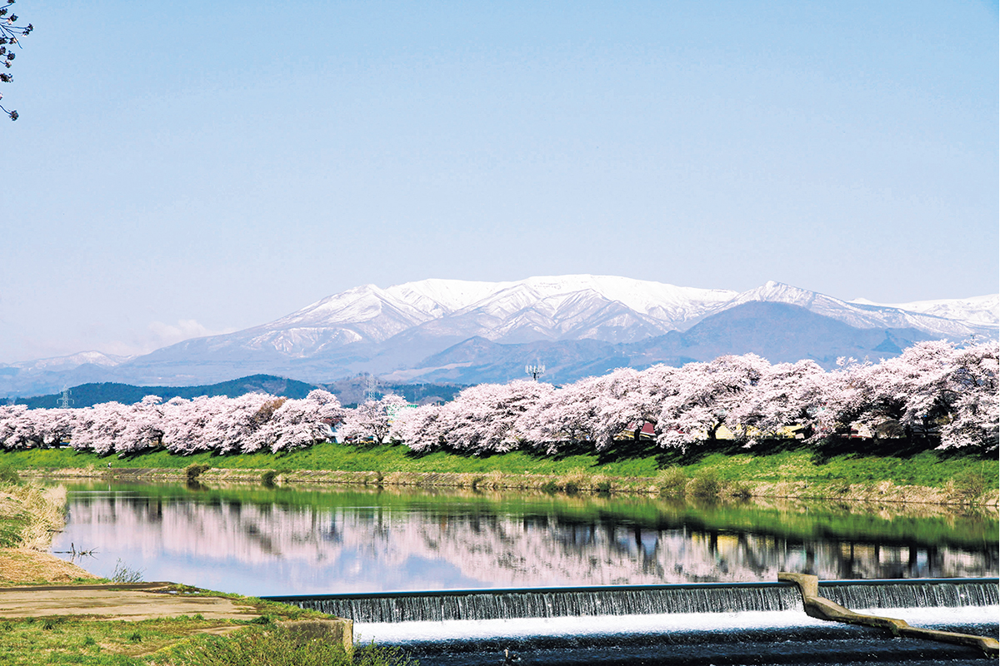
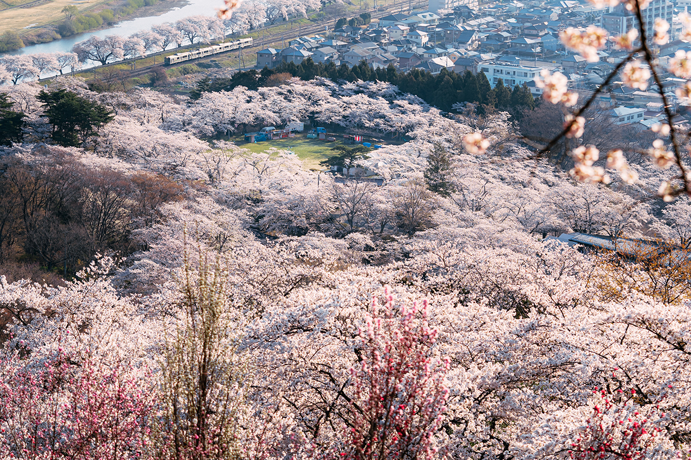
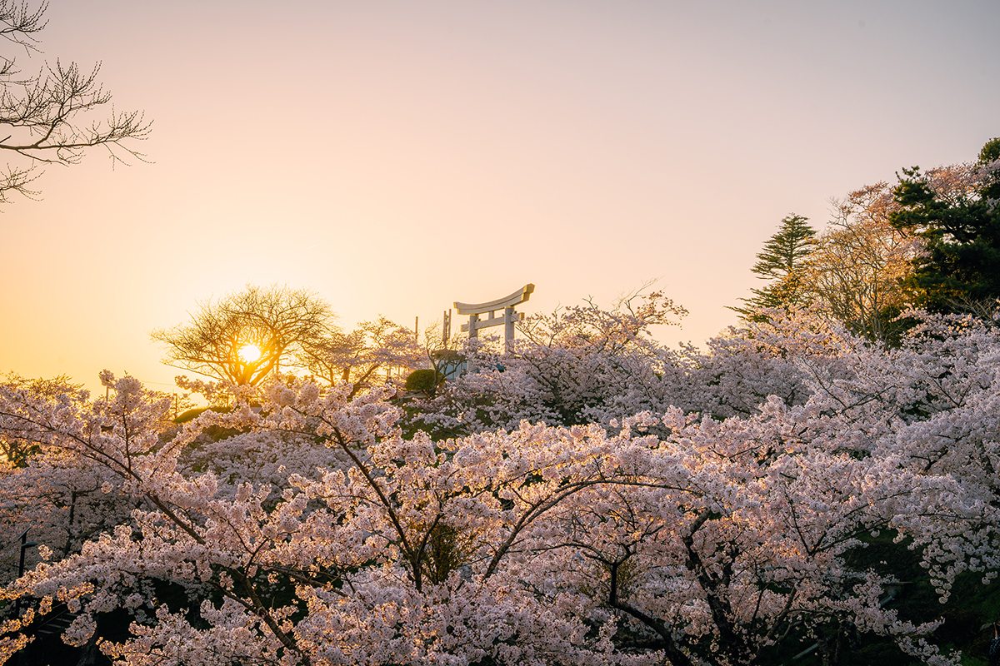

Префектура Мияги · Огавара и Сибата · сакура
Сакура на юге Мияги: тысяча деревьев вдоль реки Сироиси и парк на руинах замка Фунаока

Весной сакура цветёт вдоль реки Сироиси на юге префектуры Мияги на протяжении восьми километров. Розовая полоса деревьев, чистая вода и снежные вершины Дзао складываются в пейзаж, который можно увидеть только здесь и только несколько недель в году.
Сезон
Когда ехать за сакурой в Тохоку
Фронт цветения сакуры, линия, соединяющая даты распускания сорта сомэй-ёсино, начинает движение в конце марта с юга Кюсю и Сикоку. По Тохоку, северо-востоку главного острова Хонсю, он проходит примерно за месяц, от Фукусимы до Аомори. Поэтому путешествие удобно планировать с юга на север, переезжая от одного места цветения к другому.
Весной 2026 года тепло пришло уже в начале марта, и синоптики ждали, что на севере и востоке страны бутоны раскроются раньше обычного.
Река
«Хитомэ сэмбондзакура» на берегу Сироиси
Название «Хитомэ сэмбондзакура» значит «тысяча вишен с одного взгляда». Деревья тянутся примерно на 8 километров по дамбе вдоль реки Сироиси, от городка Огавара до соседнего городка Сибата. Весной здесь сходятся три цвета: прозрачная вода реки, бледно-розовые облака цветов и белые вершины горной гряды Дзао, где снег держится до самой весны.
У этой аллеи есть автор. В эпоху Тайсё (1912–1926), когда закончили строить дамбу на реке Сироиси, об этом узнал уроженец Огавары, предприниматель Кайдзиро Такаяма. Он захотел, чтобы родные места славились сакурой, подарил городу больше тысячи саженцев и сам их посадил. То, о чём он тогда мечтал, сохранилось до наших дней.
В Огаваре в сезон цветения проходит праздник сакуры в парке Сироисигава. В 2026 году он проходил с 3 по 16 апреля: работали лотки с едой, а с 18:00 до 21:00 деревья подсвечивали. Вход на праздник бесплатный.
«Хитомэ сэмбондзакура» на берегу Сироиси
- Адрес
- префектура Мияги, уезд Сибата, Огавара, Канэгасэ; Сибата, Фунаока
- Телефон
- +81 224-53-2659 (отдел торговли и туризма Огавары), +81 224-55-2123 (отдел торговли и туризма Сибаты)
Праздник сакуры в Огаваре
- Даты
- 3–16 апреля 2026 года
- Часы работы
- лотки с открытия до 21:00, подсветка 18:00–21:00
- Цены / Вход
- бесплатно
- Адрес
- префектура Мияги, уезд Сибата, Огавара, парк Сироисигава
Вид сверху
Парк руин замка Фунаока
Ниже по течению, в Сибате, над рекой поднимается холм, на котором когда-то стоял замок Фунаока. Здесь жил Кай Харада (1619–1671), один из старших вассалов княжества Сендай. После «смуты Датэ», борьбы за власть в княжестве в эпоху Эдо, его род прервался. Позже на месте замка разбили парк.

На вершину ходит небольшой фуникулёр, и сверху открывается панорама: склоны в сакуре, река, а вдоль неё та самая аллея «Хитомэ сэмбондзакура». По словам фотографа, снявшего этот кадр, отсюда сверху видно огромное море сакуры, и в префектуре Мияги это очень популярное место. Снимок сделан ясным утром, когда только взошло солнце, и в кадр попал поезд: обычная железная дорога на фоне цветов делает картину особенной.
Парк руин замка Фунаока
- Адрес
- префектура Мияги, уезд Сибата, Сибата, Фунаока, Татэяма, 95-1
- Телефон
- +81 224-55-2123 (отдел торговли и туризма Сибаты)
Ещё
Сакура в Исиномаки
Если после юга префектуры хочется увидеть ещё одно место цветения, на побережье в Исиномаки есть парк Хиёрияма. Говорят, в Средние века здесь стоял замок, а поэт Мацуо Басё (1644–1694), мастер хайку, который много странствовал по северу Японии, тоже поднимался на этот холм. На вершине стоит святилище Касима-Мико, и его ворота-тории смотрят на сакуру сверху. О самом Исиномаки подробнее в статье о городе после 2011 года.

Парк Хиёрияма
- Адрес
- префектура Мияги, Исиномаки, Хиёригаока, 2
- Телефон
- +81 225-95-1111 (отдел туризма Исиномаки)
Фото: zookomi.